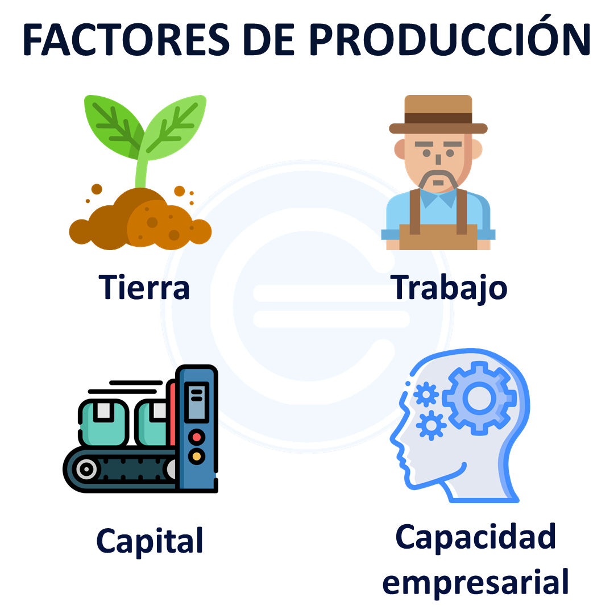

Recursos que, combinados en un proceso productivo, agregan valor en la elaboración de bienes y servicios.
Apuntes: Llamados también bienes de capital, es todo elemento material que permite que la empresa funcione como maquinaria, instalaciones, edificios, vehículos, ordenadores, materias primas, etc.
